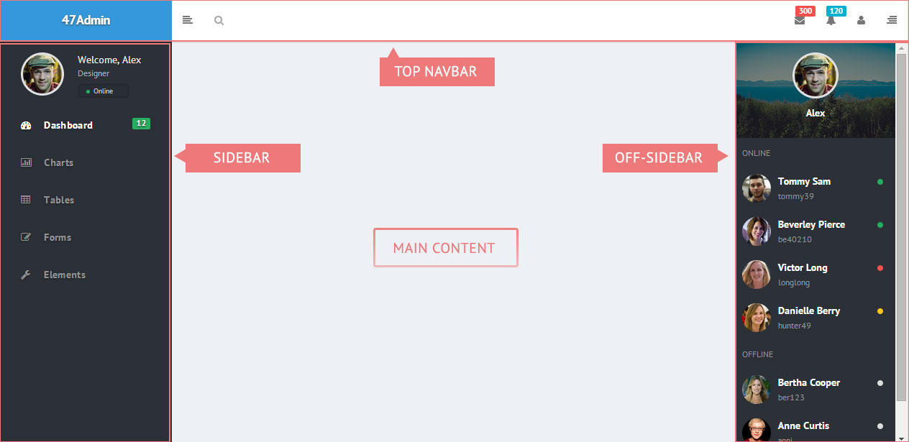

Bootstrap 3 skin designed for Admin Templates
The following picture describes the main pieces of the layout

The layout is based on the following markup represented with
<html>
<head>
#metas and css
</head>
<body>
<section class="wrapper">
<nav class="navbar navbar-default navbar-top navbar-fixed-top">
#navbar top content
</nav>
<aside class="aside">
#aside content (sidebar right)
</aside>
<aside class="offsidebar">
#offsidebar content (left)
</aside>
<section>
<div class="main-content">
#page content
</div>
</section>
</section>
#scripts
</body>
</html>
The top navbar, is a compoenent based on the classic navbar-top from bootstrap but redesigned to containt a larger and collapsable header,
The sidebar (right) has different behavior on mobile and desktop devices. On desktop, under the class .aside-toggle the navbar is condensed (to save space), on mobiles, under the same class the navbar is displayed on screen and if toggled the navbar hides automatically (off-canvas)
The offsidebar is similar to the sidebar but it hides always off the screen. That means, the offsidebar is an offcanvas components.
The section tag, child of the .wrapper element contains the main content of the page under the element .main-content. All this structure is used to achieve the slide effect differents devices when the sidebar (on mobile) or offsidebar is toggled.
To use the compiled files you only need the content of the app folder.
You only need to link to this files in your pages (or use the template.html as a base) and done. Then you can continue customizing the app.css, app.js or bootstrap.js
It's strongly suggested that you create and use a file custom.css for all your pages to avoid changing the main styles. This will make easy for you to track changes you have made and more simple to detect any issue in case you need support.
Node.js is a platform built on Chrome's JavaScript runtime for easily building fast, scalable network applications.
Gulp is a task manager, you can define different tasks to run certains commands. Those commands does the compilation job for JADE and LESS, and concats the JS files.
The package includes under the master/ folder the file gulpfile.js and package.json to install the required componets to compile the source files.
The following steps are intended to be an orientation guide, if you are not experienced with this you will need to learn more about it from Google :)
- To install node, go to http://nodejs.org/
- Then install npm https://www.npmjs.org/doc/README.html
After that, open a terminal and go to the master folder, then run the command npm install. This command will install gulp and all depencies.
Then run gulp to start the task manager
If everything goes fine, you should see the messages in the terminal telling you that most the task are done ok. The task includes a watch to compile automatically all files when they change.
The JS files are divided in the app script, the page script and the modules folders.
The module folder is shared by the app and pages script.
The modules folder contains different script used to init different features that requires Javascript. Those modules are plugin definitions (customized for this templates) and others are event listener like the dropdown animation, sidebar toggler, etc.
The app script is app.init.js. This script is contactenated after all modules to have one point where all the modules are loaded and intepreted and so, they are ready to use.
The page script is page.init.js. This script is contactenated after all modules to have one point where all the modules are loaded and intepreted and so, they are ready to use. The difference here is that the modules that you want to include in your pages must be specified in the file gulpfile.js (in case your using gulp)
The JADE structure is based on a layout file named main-layout.jade, under the layout/ folder and all templates extends this layout. There are also partials, included inthe layout file to separate different section of the page that are common to all templates.
The sidebar has a special treatment when using JADE templates. The main file for the sidebar is sidebar.jade under the partials/ folders.
This files include another named sidebar sidebar-config.jade this contains an array definition with the menu elements and mixin that uses that array to iterate and create all menu items.
This technique has the following advantages
- It allows to mark every menu item according to each page compiling, so you don't need to do it manually in the html source.
- You can see more clearly the menu structure and make changes easily without browsing through the markup
The LESS files are divided in three folders
bootstrap folder contains the bootstrap files. This files are compiled into bootstrap.css, with just the main bootstrap styles.
app folder contains the custom files for this templates and also it uses variables.less and mixins.less from bootstrap so it's possible to integrate the new components with the framework reducing duplicated declarations and allowing to have a single point of defintions.
pages folder contains the custom files pages. Each LESS file in this folder will should be compiled into its CSS version for a particular page. For example, the file include landing.less is included as landing.css just the for the landing page.
Panels can perform different actions. Currently there are three actions triggered by clicking an icon in the panel heading. The example markup is like follows
<div class="panel-heading">
<a href="#" data-perform="panel-dismiss" data-toggle="tooltip" title="" class="pull-right" data-original-title="Close Panel">
<em class="fa fa-times"></em>
</a>
<a href="#" data-perform="panel-collapse" data-toggle="tooltip" title="" class="pull-right" data-original-title="Collapse Panel">
<em class="fa fa-minus"></em>
</a>
<a href="#" data-perform="panel-refresh" data-spinner="traditional" data-toggle="tooltip" title="" class="pull-right" data-original-title="Refresh Panel">
<em class="fa fa-refresh"></em>
</a>
<div class="panel-title">Title Here</div>
</div>
Note the importance of the data-attibutes, the .pull-right class and the icon element.
And those actions are
- Dismiss: With a click the panel closes and remove itself. If the panel in inside a col-* element, it will remove the column to not leave an empty space.
- Collapse: this actions allows to collapse the panel body. This action uses extra clases thar are handled via Javascript transparently.
- Refresh: This action simply triggers an event in the .panel element that can be hooked by any other module to know when the user request a refresh (content reload).
In this action there are two parts to considere
At last, the spinner animation can be changed using the data-spinner attribute and the allowed values are the same used in the demo page for the Spinner animations. You can learn more about the spinner plugin here.
The notification system is based on the notify component from UIKIT.
There are two way to use it.
- Using a trigger element (via click) like a button , anchor, etc.
<button type="button" data-toggle="notify" data-message="Message .." class="btn btn-default">Button text</button>
data-toggle="notifiy" is what idenitfies the element to be handled by the notify plugin
data-message: the message you want to display. It accepts text or html.
data-options: This is a string of options in json format. Learn more here
- Or when the pages first loads
<div data-toggle="notify" data-onload data-message="..." data-options="{"status":"danger", "pos":"top-right"}" class="hidden-xs"></div>
Note the following
data-onload: When present, the alert box will be displayed automatically when page loads. No value required.
hidden-xs: this class from bootstrap hides the element so its not displayed in the page.
The animations components uses a plugin called animo.js http://labs.bigroomstudios.com/libraries/animo-js
This plugin uses the animation library animate.css by Dan Eden http://daneden.github.io/animate.css/
Using this plugin allows to run animations directly from jQuery but running CSS3 based animations which makes the animition handling more flexible and performant at the same time.
This plugin is used in the following JS modules
- dropdown-animate: Allow to animate the dropdown when it opens. You see a demostration in the page dropdown-animations.html
- panel-perform: Allows to animate a panel when it is destroyed by clicking on the cross icon.
- play-animation: This component allows to play animation in an element using another element as a trigger via the click event or by setting an offset so the element animates when it becomes visible when scrolling.
This components is a set of CSS classes that helps to create different element or changes a default behavior just adding the class.
This classes are defined in the file utils.less or app.css and they are most used in the creation of widgets.
Example of utilities classes are for clearing margins or add different margins sizes. Same for padding, and also you can set different background colors or text color
Chart system is based on the plugin Flot Charts
According to the type of chart you want to display, you must provide a set of values so the chart can display it. This set of values are usually stores in database or a file in the server. Because of that, there are PHP files created to server the information for each chart via AJAX POST requests using the JSON format.
Every time a page with a chart is loaded, the script flot-chart.js find the chart elements and request a content for that chart via AJAX POST, this script uses an object defined which does the ajax request, and after receive the data it inits the corresponding chart.
This is an example markup of a chart
<div style="height: 250px;" data-source="server/chart-data.php?type=area" class="chart-area flot-chart"></div>
As you can see you have to define a height, classnames to target a particular type of chart and the data-source.
The data-source is the PHP script location that returns the data in JSON format
There is one main PHP file chart-data.php that routes the request to the corresponding PHP script to return the right data for the chart.
You only need to copy or edit the content a some of the files named chart-data-*.php according to your needs to populate the charts in the page.
Loading from JSON files
To load from a JSON file directly just put the URL to the json file in the data-source attribute like follows
<div style="height: 250px;" data-source="server/chart-data-donut.json" class="chart-area flot-chart"></div>
The file upload component is handlded by a compoent from the framework UIKIT which can handle upload inputs and also uploas via drag-drop zones
The JS script for this component is upload-demo.js and like the name says, this files is a demostration and guid of how to implement your own file upload.
There is also a file in the server folder upload.php which gets the uploaded file information and save its content to the right location.
The save feature is commented so you need to uncomment and edit to set the directories where your uploaded files should be located.
The php script has many consideration regarding to security issues so is preferable to avoid making many changes
The slimcroll plugin is used to simulate a scroll bar inside custom components. To use it only wrap the component in the following markup
<div class="scroll-viewport">
<div class="scroll-content">
# component content here
</div>
</div>
The masonry grid is a grid that allows to convert a list of items into a column layout. This component is based on CSS3 Columns layout (support).
The grid is "mobile first" and the number of columns can vary from one device to another with max of 12 columns.
To use the masonry grid add the following markup
<div class="row-masonry row-masonry-lg-4">
<div class="col-masonry">
# first column
</div>
<div class="col-masonry">
# another column
</div>
</div>
Note that you can use the responsive columns in a similar way like Bootstrap grid does
.row-masonry-xl-* For large desktops resolutions
.row-masonry-lg-* From normal desktop and above
.row-masonry-md-* From tablet devices and above
.row-masonry-sm-* From mobiles and above
DataTables is a very flexible, advanced tables plugin for jQuery. This items uses a specialized version of DataTables built for Bootstrap 3. For complete documentation on DataTables, visit their website at https://datatables.net/.
Datatables supports extension to add more usability features.
This item includes the following usage modes
- Zero configuration: This is basic usage, which adds a select to change the number of row to display, an input to filter the content displayed and a pagination. All elements based on Bootstrap classes.
- Column Filtering: allows to use a text input below each columns to filter the table content by adding diferent filters by columns.
- Column Visibility: allows the user to chose via a dropdown the columns to be displayed by the table dinamically.
Each different usage includes the plugins invocation plus a set of options to add one level more of customization like text translation.
The Google Maps script support the following data attributes which are the most used when customizing a map. If you need more customization edit directly the plugin options.
<div class="gmap"
data-toggle="gmap"
data-address="address-1; address-2"
data-title="title-for-address-1;title-for-address-2"
data-maptype="ROADMAP"
data-styled
data-zoom="14" ></div>
The class .gmap is required to set a height for the map. Google needs a height at least so you can use any other class that provides a height for the element.
Data attributes
data-toggle="gmap" indicates the element must be handled by the Google Map script
data-address indicates the address(es) you want to display. Multiple address can be separated by ;
data-title indicates the text for the popover for each address. Multiple title can be separated by ; and each one will be associated with the respective address in the same order as defined
data-zoom: change the zoom of the map 0 - 19
data-maptype: The type of map. ROADMAP or TERRAIN or SATELLITE
data-styled No value required. If present the map will be styled using the styles arrays defined in the Google Map script.
This item include the full calender plugin wrapped into a classic application to manage events. This app is intentended to show how to work with the most common features that full calendar provides. You can find more on its website at http://arshaw.com/fullcalendar/docs/
The full calendar app is contained in the js module calendar.js and the execution is in 3 steps.
1- createDemoEvents() This function prepares the events data to be displayed when the calendar inits. You can wrap into this function a request to a source to get via ajax the stored events
2- initExternalEvents() attaches all necessary events to the left panel to add, remove and drag/drop events into the calendar
3- initCalendar() this function finally invokes the calendar plugin and displays the events loaded from the source. This function also contains the drop handler to know when an event has been dragged/droppped into the calendar.
At last, the ExternalEvent object is used to handle external events by adding draggable functionaly and the internal event data.
All functions above must run inside the document ready event to ensure a correct elements detection.
The following projects has been used in this item